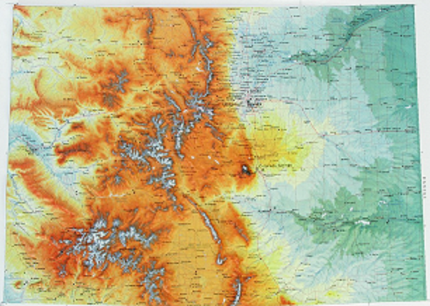

|  | High Country Lakes of ColoradoI have been fishing Colorado lakes since I was 2 years old. As I grew
older I started hiking This website is a small dedication to these wonderful lakes and fish that live within them. |
Note: There is a mixed species of Cutthroat that Colorado has stocked in
some of the high country lakes.
This is from a mix of Yellowstone,
Western Slope, Colorado River, and a few other Cutthroat breeds.
I will
reffer to this as the Mutcut.
| Native | NonNative | Non Trout and Salmon |
|---|---|---|
| Greenback Cutthroat | Rainbow Trout | Colorado Pikeminnow |
| Colorado River Cutthroat | Brown Trout | Razorback Sucker |
| Yellow Fin Cutthroat (Extinct) | Brook Trout | Bonytail Chub |
| Mountain White Fish | Arctic Grayling | Humpback Chub |
| Kokanee Salmon | ||
| Lake Trout (Mackinaw) | ||
| Mutcut |